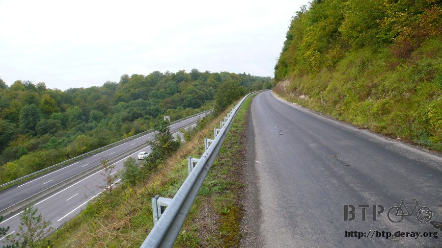
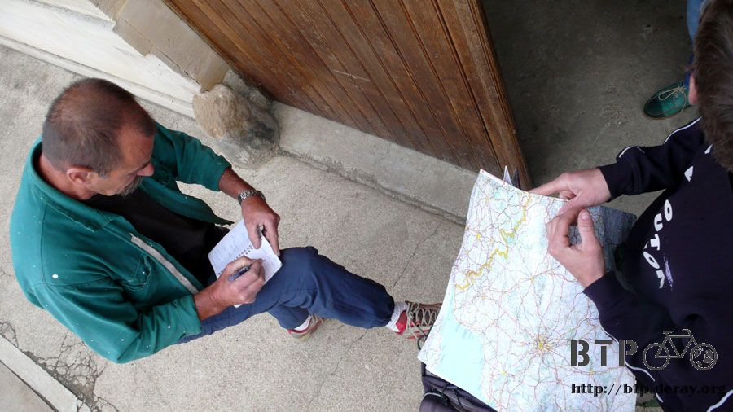
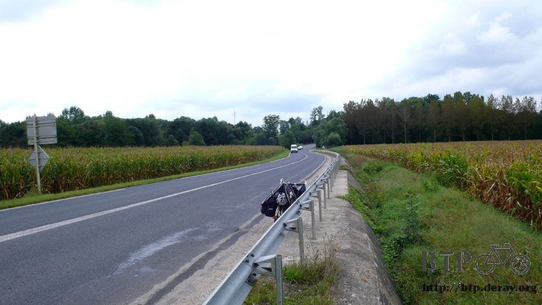
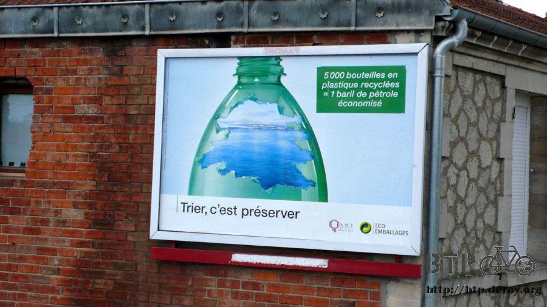
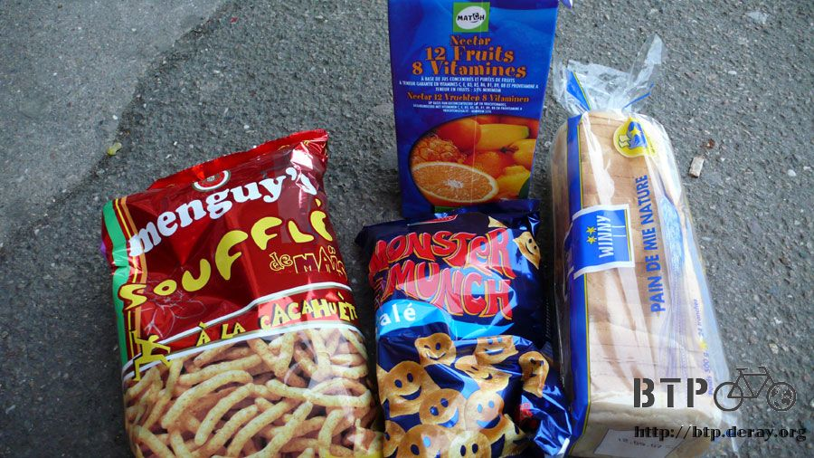
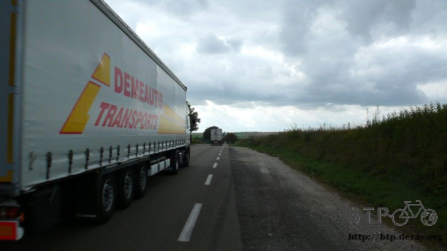
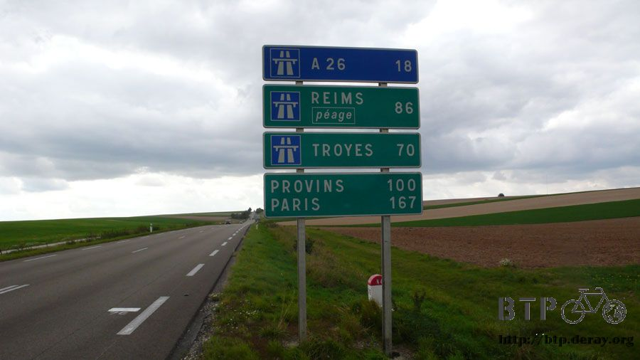
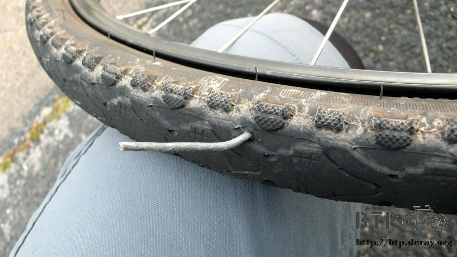
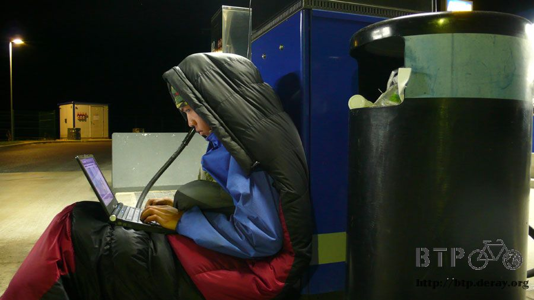

Tomorrow, Paris
Indoor temperature is definitely better, when I woke up this morning; the temperature is around 10C (50F).
Looking at the temperature I feel better inside, this is better than temperature at single digit.
I had felt if I sleep here, people might come in early to work, so I set the alarm up at 6am to wake myself up.
I am hoping to leave here early without any noticing me, but the alarm froze so it didn’t ring so I slept until 7am in the morning.
When I woke up I quickly packed up the camping gear, I was afraid I would be discovered.
Good thing when I left everything was ok, and the temperature outside was fine too.
The clouds is still dark and dreary, the frozen fingers need some exercise before they would move.
After I left I remembered why I rode here, it was because of those cars only path.
Those cars only path would still be there, they wouldn’t disappear just after my sleep, so I need to figure out a way to ride on the cars only path.

The path I need to take clearly has cars only signs posted. Of course I can choose to ride on it regardless,
but the end results are either stopped by a cop, cars honking at me, or worst scenario is a car accident.
The substitute path is the country lane on the right side, but the country lane condition isn’t very good.
However, I have no choice, there are no other road I can take, and no bicycle lanes only either.

Initially, the country lane follows right along the cars only path,
just the road condition is not as good, but at least the direction is the same.
But I don’t understand when the cars only path is flat and straight, but the country path has various hills?
Drivers in France is not like drivers in Kazakhstan, whom leaves the car light on all day.
The drivers in France only turns light on at night and early morning, so when I see cars after cars with lights on, I felt it is a little too early.
Today I didn’t get to view the sunrise since the clouds is still very thick.
However, the wind isn’t blowing against me as hard today, the wind level has decreased.
After riding on the country path for a while I need to cross to the other side on the over-pass bridge.
Looking from the top, it is easy to see why this road is cars only, it is not because of fast car speed or heavy traffic,
but the reason is because there is no place for bikes, not even a small shoulder area,
both lanes of traffic covers up the road completely.

If bicycle is riding on the cars only road, then all the cars will have to change lanes to avoid the biker,
and this can easily result in car accidents.
Thus the road in France isn’t planned well, this is a nightmare for bikers.
I had this experience in the past when I traveled through France, and now it is all over again.
Riding on the country lane I see some area that had once paved with asphalt.
However, riding here I can not see any street sign, no name at all, and no idea where those country path will lead me

I wouldn’t be too surprised if when I reach the end it is a pasture of cornfields,
this is because this is not a real road, I need to be prepared to go back anytime.
I plan the worse, but the ending is still hopeful. After passing by fields and the forest, I see signs of houses in the front.
This means I can get on normal road to ride again.

This is a moment to be remembered, this is the first sign I see in France showing Paris, but it doesn’t have any distance showing.
In my estimation, I still have 300km (187 miles) to go.
I should arrive at Paris tomorrow, however it might be difficult arriving there before noon.
From what I have been riding the last few days, I will probably arrive there around sun down.

While trying to get to Paris, some pictures for you of France’s countryside.
Looking at those duck, I feel sorry for them, the lake water must be very cold.

Good thing I came across this town while riding so I am not totally lost.
So maybe by taking small country path like this, I might be on the way to Paris.
After I left this town, the path here is again for cars only, so I took the little country road alongside the cars only path again.
Riding on the little path without any car accompanying me is a bit lonely.
Listening to the sound of cars passing by I can make sure I am riding along the correct way,
otherwise I am afraid I will get lost again.

After going around the forest I can see the cars only path underneath, I want to ride legally on the cars only path,
the easiest, shortest road, but it is a road that doesn’t allow me to be on it.
Following the big road, sometimes turning left, sometimes turning right,
then I got onto a road I do not know, and surrounded by mountains.
As long as I am in crossroads, there will be signs of current location and where it is going.
This is one good thing about France, however, those street and location can not be found on maps.

Every time meeting a crossroadI will stop and get out the map,
and look for the location and street that cannot be found on the map.
Then I will pick a direction to ride although I am not sure where I am going.
While riding, I would think, would I pick the wrong one? Maybe the other one is the correct path, do I need to go back.
I will ride like this the rest of the way.
When I get lost too much I would want to ask other people for direction.
Sometimes there are cars passing by, but no one wants to stop.
Today is already Monday, but when I passed by towns today, most of the places are still closed.
Finally passing by a farmhouse I see people chatting outside, so I run over with my map to ask for directions.

I don’t care if there is language barrier, I point to the map saying I want to get to Paris, which road should I take?
The other person cannot find where I am currently on the map, just some close by locations.
The good man took over my notebook started writing down all the towns I will pass by from now on,
so I just need to follow the notes

He wrote down 50km (32miles) worth of road, although once I get into the city I will need to find the rest of the way on my own.
Taking back my notebook, looking at alphabets that sort of look like English,
so there shouldn’t be any problem taking the notebook and go match it to the location signs, right?
Now I feel much confident, before I left I asked if I could get some water.
Of course it is no problem again, and he give me a 2L worth of bottled water as well.
I will be able to ride until I reach the next place that allows me to get more water.

Thank you for your good heart, so I can decide quickly,
and when I meet crossroads I meet later I will be able to pick which way to go.

I want to ride N4 road, if I can ride on it, then I can ride all the way to Paris, but the problem is I cannot ride on it.
If I take small country road, then I need to go north first, then west,
make some turns, but I will ride extra 30km (18.7miles) more.
Another recycling ad on the wall, the same style as the last one I saw.
This time it says by recycling 5000 bottles, it can save a barrel of oil.

I already finished the toast I bought yesterday. The Euro in my pocket is less than $1, after getting into this city;
I found a grocery store to get some goods.
I got some mixed juice, salty shrimp chips, some smiley cookies, and a loaf of bread.

So how did I pay for those since I don’t have any Euro on me?
The answer is credit card. But since I wasn’t sure if I can swipe my card, so I didn’t dare to get too many things,
and I got the bread I am already tired with.
So if I couldn’t use my credit card, I can return rest of the items. The cash on me is enough to purchase the loaf of bread.
The total for all these items is $4.8 Euros, and when I got out my credit card,
the cashier didn’t’ give me any trouble just because the amount is too low.
Finally I purchased new food; I opened up the juice and drink half of it. I opened up the smiley cookie and ate lots of it.
I will save the toast when I get really hungry. One thing good about France is that as long as the road is seen on a map,
then it means the road is paved well, regardless how small it may be.
Just like this road, the quality beats any road in Kazakhstan, but this is just a small road in France started with D.

Even though I know I am riding extra due to the fact I can’t be on cars only path, but since the road condition is this excellent,
it does cut down the tiredness a bit. Rather than complaining, I might as well get moving and bike faster.
It feels like once I entered Europe, or should I say entering France, I felt the trip has ended.
Just few hundreds of km left, but I still need to finish it, it will not finish on its own.
It doesn’t matter how much I talk, the one that is riding is I. Tossing away all emotions, just 1 thing left, going forward.
After riding the 50km the guy told me earlier, I am now on N4 road again,
I am very thankful to the guy who wrote directions in my notebook.
If it wasn’t for him, then I will just randomly going on my own, and I don’t know if I would be able to get back here.
And even if I do get back here on my own, then it might be hours later.

Another thing that is to be happy about is the N4 road now allows bike to be on there, so now I can ride faster.
Cars only path and bike are almost the same; the only difference is there is no blue sign on the road.

The N4 road now has trucks passing by, but there is a shoulder area on the normally very crowded road.
I try to ride closest to the edge, away from the big trucks.
On roads with speed limit 110km/hour (69miles/hour) it is very scary to be next to the trucks,
this is because just with the wind blowing on me I am already swerving.
Riding on N4, I am now reunited with road signs.
When I saw the same sign this morning, it didn’t show how far I am from Paris.
Right now about 3pm in the afternoon, I have 167km (104 miles) left.

So I am sure I will arrive at Paris tomorrow, that is, if I don’t get lost too much in Paris.
I should be able to see the Eiffel tower before dark.
But if I want to reach there by noon, then it isn’t just normal riding.
I would have to ride tonight in total darkness toward Paris.
Looking at the sign, I feel Paris isn’t far away anymore.
The map says on N4 only this section allows bike, so the rest I will need to find another way.

That is ok, I will take whatever I can get. If I can ride good for 1km is better than going in circles in the same place.
Rushing on N4 on this section toward Paris, but I actually got a flat tire, how can this be?

I got a flat tire on roads where huge trucks pass by, and this is the same tire I had just changed to a new inner tube yesterday.
When I left Poland at Goose’s, I had brought 3 brand new inner tubes.
I had felt it will be fine, but just little distance here I have already broke 2 inner tubes already.
Trying to park the bike away from the road, I am sitting in the grass,
the wind is blowing from passing by trucks, and I quickly put on new inner tubes.
This time I didn’t need to find what caused the flat tire,
anyone other than being blind would be able to see this huge wire poked through the tire.

I am a bit sad seeing this huge wire poking through a brand new tire; it is a good thing the frame didn’t get damaged from it.
Spending 10 minutes fixing the tire, I am not sure how much more I can ride before sun down.
The sun is setting directly west to me, where my destination is.
I will arrive tomorrow. This trip started from Beijing will just need one more day to finish.

Tomorrow, Paris.
I have not planned to sleep tonight. I had planned to find a corner to rest a bit, and then ride during the early morning.
However much I can ride before sunrise, there is possibility I can arrive at Paris before noon.
Following N4 road I found lots of rest stops,
I think this is because the trucks aren’t allowed on freeway, so all the freeway are on N4 now.
And at those rest stops, they have the basic 24-hour business; the area is huge, which allows lots of trucks parked here.
When I discovered this place I had planned to go inside to eat, get some rest,
get my camera charged up, and then I will be able to ride.

But then the door didn’t post a sign saying credit cards allowed, so I can’t spend money inside.
Usually before the sun goes down, there will still be 1 hour of light out door.
But as soon as the sun is at ground level, it will become completely dark in 15 minutes.

I turned on my back bicycle flashing light and the front bicycle light; following the shoulder I slowly continues to ride.
It is the same road condition, but it is very different between daylight and nighttime, at nighttime it feels much more dangerous.
The cars behind will use their high beam to shine on me first to see what is that flashing red light ahead.
When the cars discover it is a bicycle, they will go around me.
I am not afraid to be hit, but rather falling while riding in the dark.
It is not clear the road condition ahead since it is pitch dark;
I only have 1-second time to figure out what I need to do before reaching it.
Around 10pm I got to this 24-hour gas station with no one there, I feel I am like an insect, attracted by lights.

Because there is no one at the gas station, so there is no worker here, this will be my rest stop today.
Good thing I found electricity plug here, so I plugged in to use it.
Placing my behind against the sleeping bag, my back against the gas station machine,
I plan to use few hours to write the travel journals for the last 3 days.

Sitting at the gas station with the wind blowing against me,
I didn’t change anything, just took off my gloves and changed to the slipper.
The surrounding is pitch black; anywhere outside the gas station is completely dark.
However, this is the gas station, even if there is no employee, there will be customers.
Where I sit at is where people park there to get gas, so there are trucks passing by to get gas.

This guy is a truck driver; he just got here from Moscow and going to Paris.
I point to the bike saying I am from Moscow too, and going to Paris.
Once I said this he is a bit in shock. But riding from Moscow to here is just part of the trip, just 1/3 of it.
The guy chats with me while getting gas.
He speaks French, I pretend I understand him, but my eyes and hands never left the computer.
The guy didn’t leave after getting gas. There are lots of truckers driving in here, park,
and sleep inside the gas station, I see he looked tired as well.
I am not sure how many days he is required to drive from Moscow to Paris.
He sit in the tuck looking at me typing away on the computer, he felt interested.
Yes, it is my sleeping bag; the night is getting colder so I took out the sleeping bag to wrap myself up.
Then I hear sound from the truck, and smelled coffee.
The smell of coffee flew out, it is very unimaginable, and there is coffee maker inside the truck!
So when he wants to drink coffee to get energy he can do so any time.
He made 2 cups of coffee, one for himself and one for me.

In the cold blowing wind I can hold on to a cup of hot coffee I feel great,
looking at the guy getting gas I had wanted to ask him if he can spare some for me,
this way I would have fuel for the hot plate. But thinking I will get to Paris tomorrow,
what is the point getting fuel now?
If the guy really do give me fuel,
then I will start the fire right here at the gas station, and tomorrow I would probably get on the news paper.
Drinking the hot coffee from the guy, and I can get refills too.
Saying good-bye to the guy and continue to type on the laptop.

This is what I look like now, including typing these words.
Including before when I was writing the travel journal for today, it is rare I write what is going on currently.
In the cold night the temperature is 7C (44.6F), but the sleeping bag keeping me warm.
In the gas station I wrote 3 days worth of travel journals, it is a bit tiring.
I wrote from 10pm all the way to 4am, total 6 hours, during which time I did not sleep at all.
Using the coffee earlier to warm myself up and some boost of energy.
After writing the journal, I pack up the sleeping bag and ready to leave.
From 4am to 12pm, I have 8 hours to ride.
I don’t know if I can reach Paris before noon.
Maybe by the time you are reading this travel journal, I already passed out under the Eiffel Tower, or crying my heart out.
The more likely possibility is getting lost on the road.
Regardless, whichever day, or how late it is, one day I will reach my destination.
Let’s go, it is time to end this trip.